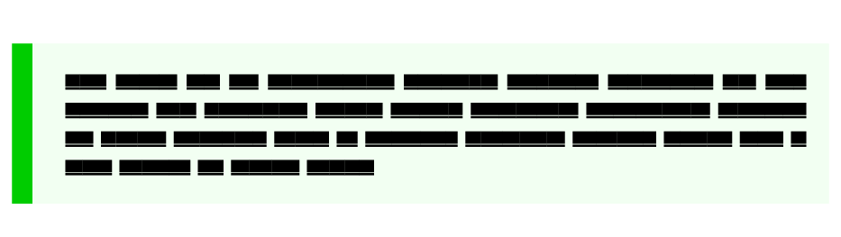
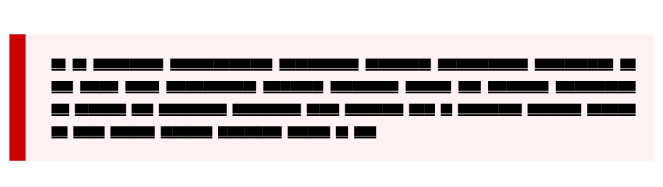
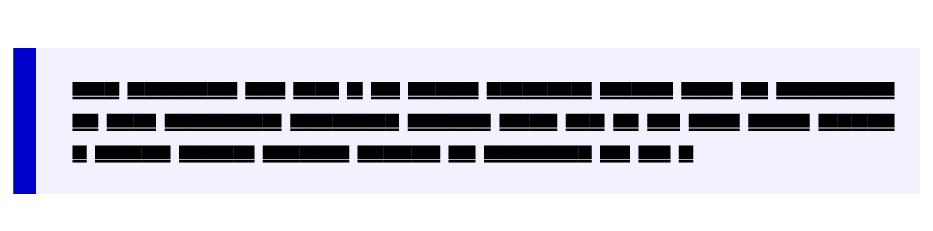

Frame with solid left line
Posted on August 18, 2017
Adding a solid line of the left side of a frame, block quote, etc. creates a simple, clean, and attractive visual effect that I like.
![{map[src:/context-blog/post/frame-with-solid-left-line/leftframe-0.png class:center alt:Simple example] Page("Frame with solid left line") <nil> true <nil>}](/context-blog/post/frame-with-solid-left-line/leftframe-0.png)
I don’t know when I first came across this style, but it is used commonly on the Internet to show blockquotes. So, how do we get this style with ConTeXT?
It is pretty straight-forward to get this effect. All we need is, well, define a frame with a left border. For example, the above image was obtained using:
\definecolor[darkgray] [s=0.5]
\definecolor[lightgray] [s=0.95]
\defineframedtext
[leftbartext]
[
width=broad,
frame=off,
framecolor=darkgray,
leftframe=on,
rulethickness=2ex,
offset=0.25ex,
loffset=3ex,
background=color,
backgroundcolor=lightgray,
]
and then use it as
\startleftbartext
...
\stopleftbartext
It is also straight forward to inherit from the leftbartext frame defined
above to get frames with different colors:
\definecolor[darkred] [r=0.8]
\definecolor[darkgreen] [g=0.8]
\definecolor[darkblue] [b=0.8]
\definecolor[lightred] [0.95(red,white)]
\definecolor[lightgreen] [0.95(green,white)]
\definecolor[lightblue] [0.95(blue,white)]
\defineframedtext
[exampletext]
[leftbartext]
[
framecolor=darkgreen,
backgroundcolor=lightgreen,
]
\defineframedtext
[alerttext]
[leftbartext]
[
framecolor=darkred,
backgroundcolor=lightred,
]
\defineframedtext
[blocktext]
[leftbartext]
[
framecolor=darkblue,
backgroundcolor=lightblue,
]
which give the following three frames
  
This entry was posted in Visualization and tagged backgrounds, framed.